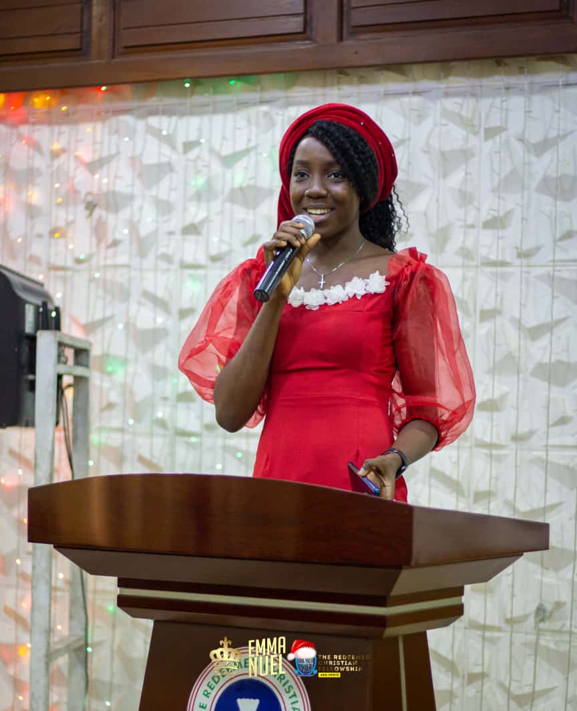
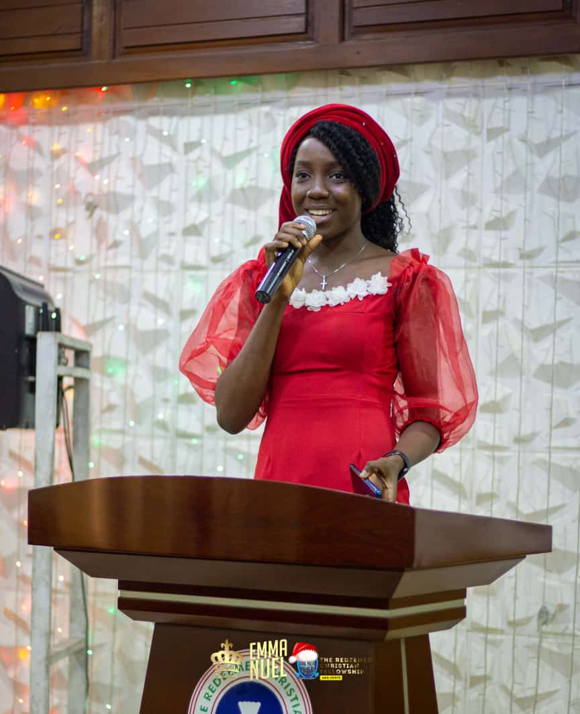
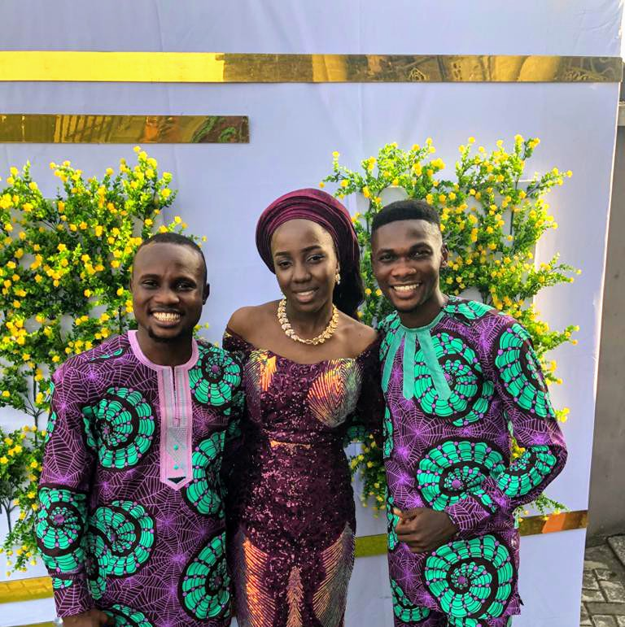
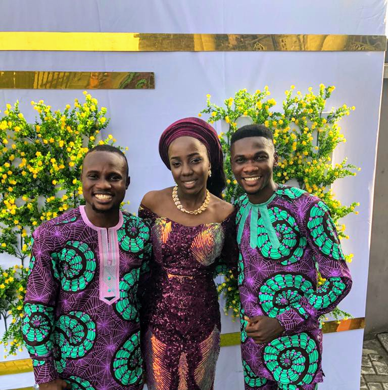

Name: Grace Tinuola Osamagbe
Age: ** years
Occuption: Mass Communication graduate of OOU, Stylist/Fashion Designer
Focus: GOD
Ambition: To be conformed to the image of the Son of GOD
Hobby: 🤔🤔
How I Met Her: Via RCF OOU
Who She Is To Me: My Pastor, Our Mommy (😂😂🤣)
Office: One-time Vice President & Sis Cord of RCFOOU Ago-Iwoye.
My Love For Her:
Relationship Status: Bride of Christ 😌
Happy Birthday Pastor Grace Osamagbe
 



Testimony Time
Q: WHO HAS A TESTIMONY?
Ayokunle: 🙋‍♂️ I do.....
Mod: Okay, you know we have a lot of testifiers, so we give you the chance to say just few words. Have it 🎤
Ayokunle: (Testing 🎤🗣️) I give God praise for making me know Past Grace. She's a model of righteousness. Though we're not so close but I've really learnt a lot from her. I love your voice Mama🏃🏃🏃
Mod: 1 minute more
Ayokunle: 😲😞Okay. So there was a day I met her on my way to school in the morning. She was waiting for bus and I greeted her and so did one other RCF member. I planned inside me to pay the t.fare for three (I can't pay for Mama and leave the guy) but also considering my money 😥😥(that's bad of me). And then she spoke to us not to worry about the t.fare🙆‍♂️🙆‍♂️🙆‍♂️. Last last, she paid tfar3 for four (+her friend or so). Mehn, I was flabbergasted. That's the second time a leader in RCF will do something like that for me (and that made me conclude it's their dominant trait)...... Past Grace, God looks good on you. Thanks, I love you ma.
Ayokunle: 🙋‍♂️ I do.....
Mod: Okay, you know we have a lot of testifiers, so we give you the chance to say just few words. Have it 🎤
Ayokunle: (Testing 🎤🗣️) I give God praise for making me know Past Grace. She's a model of righteousness. Though we're not so close but I've really learnt a lot from her. I love your voice Mama🏃🏃🏃
Mod: 1 minute more
Ayokunle: 😲😞Okay. So there was a day I met her on my way to school in the morning. She was waiting for bus and I greeted her and so did one other RCF member. I planned inside me to pay the t.fare for three (I can't pay for Mama and leave the guy) but also considering my money 😥😥(that's bad of me). And then she spoke to us not to worry about the t.fare🙆‍♂️🙆‍♂️🙆‍♂️. Last last, she paid tfar3 for four (+her friend or so). Mehn, I was flabbergasted. That's the second time a leader in RCF will do something like that for me (and that made me conclude it's their dominant trait)...... Past Grace, God looks good on you. Thanks, I love you ma.
Welcome To Mini Gallery 🙈


 
